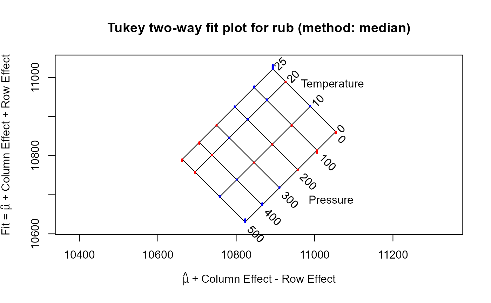

The specific volume of natural rubber was measured at four values of temperature and six values of pressure. Is there any evidence that volume is not an additive relation with temperature and pressure?
Format
a 4 x 6 matrix, where the cell values are the specific volume (in cubic centimeters per gram) of peroxide-cured rubber. The row and column variables are:
Temperature, in degrees Celcuis
Pressure, in kg / cm^2 above atmospheric pressure.
Source
Wood, L. A. & Martin, G. M. (1964). "Compressibility of natural rubber at pressures below 500kg/cm^2", Journal of Research of the National Standards Bureau–A. Physics & Chemistry, **68A**, 259–268.
References
Emerson, J. D. & Wong, G. Y. (1985). "Resistant Nonadditve Fits for Two-Way Tables". In Hoaglin, D. C., Mosteller, F., & Tukey, J. W. (Eds.). Exploring data tables, trends and shapes. John Wiley Sons. Ch. 3, Table 3.1.
Examples
Rubber
#> Pressure
#> Temperature 500 400 300 200 100 0
#> 0 1.0637 1.0678 1.0719 1.0763 1.0807 1.0857
#> 10 1.0697 1.0739 1.0782 1.0828 1.0876 1.0927
#> 20 1.0756 1.0801 1.0846 1.0894 1.0944 1.0988
#> 25 1.0786 1.0830 1.0877 1.0926 1.0977 1.1032
#> attr(,"responseName")
#> [1] "Volume"
# scale the response to avoid small decimals
rub <- 10000*Rubber
rubfit <- twoway(rub, "median")
plot(rubfit)
